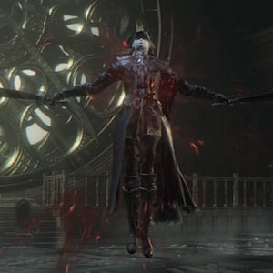

Lady Maria(of the Astral Clocktower) |
|||
|---|---|---|---|
|  | |||
| General Info | |||
 |
 |
Location | Drops |
| 14,081 | 39,000 | Astral Clocktower | Celestial Dial |
| Defenses | |||
 |
 |
 |
-- |
| 147 | 147 | 147 | -- |
 |
 |
 |
 |
| 147 | 103 | 177 | 103 |
 |
 |
 |
 |
| 999 | 999 | No | No |
Lady Maria of the Astral Clocktower (時計塔のマリア Tokei-tō no Maria lit. "Maria of the Clocktower") is a Boss in Bloodborne. She was added with The Old Hunters DLC.
"A corpse... should be left well alone." (Lady Maria)
Dialogue
Cut content: Secret dialogue with Lady Maria that was later cut out of the game can be found here.
Examining her body:
"A corpse... should be left well alone.
Oh, I know very well. How the secrets beckon so sweetly.
Only an honest death will cure you now.
Liberate you, from your wild curiosity."
Lady Maria General Information
The boss will only be initiated once the corpse is examined. After the cutscene, Lady Maria and the player character will be placed into set positions and the fight will begin.
This fight has three phases:
- Phase 1:
- Lady Maria will fight normally with the Rakuyo occasionally switching between transformed and untransformed modes.
- Can occasionally use her gun in both transformed and untransformed modes..
- Phase 2:
- Lady Maria will stab her chest with the two blades, produce an explosion of blood and coat her weapons in it, similar to the Chikage.
- All of her previously used attacks will now have greatly extended reach and will gain a bloody effect.
- In this stage she will also gain several new attacks incorporating blood.
- Phase 3:
- Lady Maria will levitate off the ground slowly, seemingly syphoning the blood on her, then producing a fairly large blood explosion.
- All attacks used in the previous phases now gain a fire property, which traces each attack, producing fire after the attack finishes.
- The fire is produced slightly further away from the attack, effectively extending the attack's range.
- It is possible to be hit by both the attack and the fire after it in succession if not dodged properly.
- Some of her attacks now open up visceral attacks for her.
Locations
- Astral Clocktower, after defeating Living Failures, open the door to find her there.
Drops
- 39000 Blood Echoes (NG) 123,669 Blood Echoes (NG+) 136,065 (NG++), NG+6 (247,338), NG+7 (309,173)
- Lady Maria Hunter Set can be bought after killing her at the Messenger Insight Bath
- Celestial Dial will spawn next to the lamp at the Astral Clocktower after killing her
Strategy & Tips
General Tips
- Dodge to your left to avoid most of her attacks.
- It is possible to parry Lady Maria through all her three phases.
- It is also possible to stagger her through all three phases.
- Starting from phase 2, Lady Maria will gain an attack that can unconditionally parry, similar to Gehrman's bullet (a single, long charging criss-cross attack)
- When attempting to parry Lady Maria in phase 3, even if it is successful, it is still possible to be hit by the fire slashes of her attack even though the attack does not complete and the fire effect does not appear on screen. This will damage and stun you, preventing you from getting a visceral in.
- She can easily be moved to phase 3, even skipping phase 2, with 3-4 visceral attacks.
- A simple strategy: R1 spam with a reasonably quick weapon (threaded cane, church pick, etc). After 2-4 hits, fire a blunderbuss. The timing will very often result in a parry. Works in all 3 phases - especially if you back her into a wall during phase 1. The only attack that disrupts your flow is her charge attack, but you can often regain your health via rally if you keep spamming.
Weapon Specific Tips
- A cheese is possible where you knock her down with Augur of Ebrietas, walk up to her, and repeat. You get the chance for a visceral attack if you time it properly.
- Cheese also possible using the Threaded Cane. Light attacks (untransformed) stunlock her long enough to chain them together, so you can light-attack her until your stamina is drained. Repeat until victory, parries and visceral attacks make successful starting points for these chains of attacks.
- Executioner Gloves stagger her nicely. Shoot two charges with the gloves, refill with blood bullets and shoot two more charges. You can use the stagger to get some hits in as well.
- Ludwig's Holy Blade when above a strength threshold will stagger Lady Maria out of her 'armored' (two-handed moves).
- When using the Chikage, phase 1 during her dual wield can be handled by staggering her normal moves and looking out for her 2h strikes which can be easily parried because they are slow and the only moves that won't be staggered.
Melee w/ Beast Roar
First Phase
- Get her next to a wall. Roar, 4 to 5 hits depending on your stamina (never let it fully deplete). Roar, 4 to 5 hits, repeat.
Second and Third Phase
- Hug her left side and try to stay as close to her as possible, quickly close any gap between you and Lady Maria. One or two hits, then dash around to get yourself position behind her again.
Silver Sword R1 Spam + Parry Baiting Strategy
- This strategy requires pistol and Silver Sword mode of either Kirkhammer or Ludwig's Blade
- If you R1 spam she either dodges away or stays put and tries to attack back. The silver sword is fast and poise breaking enough so that she can't hit back. Even the heavy two handed charged smash gets canceled if you hit her enough.
- Spam deals heavy damage to her and works in all 3 phases but the situation has to be perfect or you will get punished. You need to have enough stamina to do it and bail out safely
- Counter shot baiting is useful when you aren't used to PVP parrying or not familiar with the moveset of Lady Maria
- To create a parry shot chance you can either start shooting at anytime during your R1 spam or use the R2 thrust attack (charged or not) to lightly stun her and shoot immediately after it once or twice
- On those occasions she is near you and can either dodge away or try to attack back getting counter shot and punished
- To do chain of parries you need to do running R1 attack after visceral attack. It gets her lightly stunned again and if you shoot her again there is a high chance you can parry her again especialy in the first phase
- In the second and third phase it is more about getting a chance to R1 spam and maybe finish the spam with a visceral attack. Running R1 trick or R2 thrust attack can be done more rarely then.
| Attack Name | Attack Description & Counter |
|---|---|
| ?? | ?? |
| ?? | ?? |
| ?? | ?? |
| ?? | ?? |
Videos
((Please respect these video posting guidelines))
Notes & Trivia
- Read this article to find cut content that reveals further dialogue with Lady Maria.
- She is voiced by Evetta Muradasilova, the same voice actress who voiced the Plain Doll, and the Maiden in Black in Demon's Souls.
- Lady Maria could be the inspiration behind the Plain Doll created by Gehrman.
- Killing her triggers additional dialogue with the Plain Doll, further fueling the connection between the two.
- It appears that players are unable to summon help for fighting her on their first try, most likely due to her arena being positioned directly after another boss battle.
- There are many resemblances with the Sir Alonne boss battle (Dark Souls 2). The scenery, the choice of music and the use of katanas.
- She has a special visceral attack animation, in which she will hug the player character before removing her hand from their chest. What triggers it is currently unknown.
- When she uses "charge attacks" she emits little blue lights. Such lights can also be detected when you transform church weapons or when you gain Insight.
- Some of the blue lights turn out to be snowflakes. Such snowflakes where also detected during the meteor shower of The Living Failures.
- Lady Maria's attire displays a golden salamander
- Her Rakuyo can be interpreted as mimicking the hands of the Astral Clock. Some of her stances also seem to imitate the hands of a clock.
- The cover for the DLC (the picture right behind these letters) shows her holding the saber part of her Rakuyo.
- Through her attire, we find out that she is distantly related to Queen Annalise of the Vilebloods. Most likely as a result, she was able to use blood based attacks.
- When examining, it appears that Maria has probably attempted suicide, yet failed, further implicating the "undying" nature of a Vileblood.
- Intrestingly enough, Lady Maria has tossed away her Rakuyo when she could "stomach it no longer" yet uses it during the boss battle. You can find her Rakuyo in the well in Fishing Hamlet after you defeat her.
- It's possible the weapon she uses is not the same Rakuyo, but made to the same design, since the Rakuyo specifically states that she was fond of it as it did not rely on blood. Since the weapon she uses has blood-based attacks, she may have had a counterpart weapon made that incorporated blood, and discarded the original Rakuyo in shame.
Gallery
 Anonymous
AnonymousSometimes I deliberately extend the fight with Maria. I never parry her and have learned to perfectly dodge all her attacks, even in phase 3. I do this to bait out her extremely rare down shot attack where she slowly rips out my character's liver. I'm considering making a new character and stopping at her fight for this purpose. I honestly just want Maria to singe my flesh with her rotten Cainhurst blood and mark me as her property.
- Anonymous
- Anonymous
I want maria to literally come to my house and f*cking kill me. just absolutely destroy me. I'm talkin' full on, watermelon-in-the-thighs level carnage. And I want it to scare the sh*t outta me. I mean I hope I piss myself. I hope I piss myself and she calls me her little "peepee pisspiss boy." I want her to f*ck me up. I mean I want her to make me her b*tch. Her little peepee-piss-myself-b*tch, I want it to get embarrassing. I mean like... weirdly embarrassing, Unsanitary, too. We should be entirely different people, by the end of the first eight hours.
- Anonymous
- Anonymous
Eileen once said a hoonter should hoont beasts not hoonters. She was wrong. Instead we must hunt the simps.
- Anonymous
So, if like me you don't really play with parry and her combo in the 3rd phase is giving you trouble, here's how I finally beat her :
Phase 1 and 2, dodge and attack, I only went for a parry if I was sure about getting a crit.,not wasting any bullets. That means, going into phase 3, I still had most of my bullets. Went for a parry when she was starting her combo. At best, I got the timing right and I got a crit., at worse, I interrupted her combo, and stunned her enough to get a couple of hits in.
So, kind of mixing strategies worked for me. Pure melee dodge/attack for the first 2 phases, then heavy uses of the firearm in her phase phase to interrupt her combo.
- Anonymous
Getting so tired of this fight. I can get her to her 3rd phase without too much issues, but once there, I get caught in her combo that one-shot me...
The things is, you need to dodge her first before attacking (if you don't play with parry), and in her 3rd phase, I'm always a fraction of second too late, and it's game over...
I haven't that much trouble with a boss since Martyr Logarius.
- Anonymous
First playthrough of The Old Hunters and I beat her on my first attempt. AMA
- Anonymous
- Anonymous
- Anonymous
I want maria to put her sword against my neck and dominate me
- Anonymous
- Anonymous
- Anonymous
Her younger sister Malenia is making a name for herself I hear.
- Anonymous
She was giving me trouble until I changed to the whirligig saw. The L2 stagger is godlike in this fight.
- Anonymous
If they are gonna go the extra mile to make every character in these games waifu atleast add jiggle physics
- Anonymous
- Anonymous
growing up i thought i would be no ones housewife but then i met my wife lady maria of the astral clocktower and now i get to make her a warm dinner every day
I've removed the "She is EXTREMELY weak to Thrust ( ͡° ͜ʖ ͡°)" line. Dont understand how it was left up for so long.
- Anonymous
Given that she's not been morphed or mutated in anyway, anyone notice how Hella Tall she is?
- Anonymous
I have never been parried by her. Either it's just a rare move or I never realized that one of her attacks put you into parry state. Gehrman on the other hand loves to spam his Insta parry.
- Anonymous
- Anonymous
Beat her on my second try. Fighting Ludwig hardened me and she is literally the queen of being parried at this point.
- Anonymous
This fight was quite literally bloody hell and yet this is probably the most amount of fun that I've had with a hunter boss fight in this game.
- Anonymous
there's a picture on the table next to her, what does it represent?
- Anonymous
- Anonymous
Yeah I'm a SIMP
S - Stop killing me please
I - I just want to finish the DLC
M - Maria please stop killing me
P - Please stop killing me Maria
- Anonymous
She is EXTREMELY weak to Thrust ( ͡° ͜ʖ ͡°)
why is this here?
- Anonymous
I thought I would have to spend a couple of hours fighting Maria, but I somehow managed to beat her in 4 attempts thanks to the parry system.
It's kind of a shame because I did actually enjoy fighting her in the third phase, even tho I never died to her third phase once.
- Anonymous
Her stupid phase 3 attacks lag the game and make dodging harder than necessary.
- Anonymous
- Anonymous
- Anonymous
I wish she got a buff in her second phase that made parrying and staggering her impossible. Its a shame that she can be cheesed so easily with r1 or l2 spam.
- Anonymous
For anyone having trouble, use the Augur of Ebrietas. It took two fights to crush her. I had no problem getting her to the third phase in NG+ but kept dying. Personally, I think I’m decent at this game but apparently not.
Nonetheless, the AofE allowed me to kick the sh*t out of her and I can’t stress it’s value enough. Just make sure you get your viscerals in when you can otherwise it’s pointless. Additionally, remember, dodge to her left. Cake!
- Anonymous
Hated the bosses before her but she was so good she made up for that. Didn't even think about parrying since I was just finding the boss with dodging so damn enjoyable. Easily a favorite.
- Anonymous
One of the only bosses I will intentionally lose to just so I can fight them over and over
- Anonymous
The article says that "When examining, it appears that Maria has probably attempted suicide, yet failed, further implicating the "undying" nature of a Vileblood."
I would suggest that, after the events at the fishing village, Maria attempted and succeeded in taking her own life - which is why she's stuck in the Hunter's Nightmare, where hunters go after they die.
- Anonymous
funny
she's the only great hunter boss in the game imo
other ones have bad arenas or can be parry'ed easily
great boss fight but not as good as ludwig
- Anonymous
Intimidating at first if you aren't so great at hunter fights or parrying, but what others have said around here is true: keep close to her, dodge to the left (her right), strike once or twice, she will immediately attempt to attack you, so you can parry her easily. Finally beat her with an arcane-str build that didn't really use lots of parrying so far. Being aggressive and sticking to her sides lead me to victory.
- Anonymous
- Anonymous
BTW if you're using two handed strength build, just consistently dodge past most of her attacks and then simply hit when you turn around (must be target locked). Works for pretty much every attack (aside from the floating death bomb, which you must dodge underneath). When she uses the two handed "R2" looking attack of hers, it's best to get her close to a wall and stay on her back. Got through this fight with two-handed hunter axe (very low vitality build) and lost almost no health. Remember, if she does hit you hard and you can't rally back in time, just dodge and use blood vials instead of attacking 1 or 2 times.
Beast roar drops her on her ass to give you some breathing space or continue a R1 stagger.
- Anonymous
I wonder how she can use her rakuyo in combat when she originally threw it into a well ...
- Anonymous
- Anonymous
- Anonymous
Why the **** does she have 3 unreactable attacks? Her triple thrust combo becomes almost instant in 2nd phase (and so does the very occasional single-arm thrust), and the second spin she gets in 3rd phase - NOT ONCE have I managed to dodge it in over like 200 times I fought her. Literally the only bloodborne enemy I'm having such trouble with.
- Anonymous
idk why i even trust this wiki so much **** info threaded cane does not stunlock her she just raped me with a combo right through the cane
This boss gave me MAJOR PTSD from the first 2 times I killed her, but now I understand how to beat her
P A R R Y H E R A S S
- Anonymous
- Anonymous
If FS had given the Bloody Crow of Cainhurst a boss health bar and had a song composed for him, he could have replaced Maria's function as a boss encounter easily and we could've gotten something more original here. The dlc already has a filler boss (Living Failures) and rehash (Laurence) and Maria is kind of filler tbh. But I know, I know, these lore bosses aren't meant to be challenging. For instance, I find Nashandra to be an interesting character, although her boss fight is very easy. Same goes for the Moon Presence in this game.
And of course, this is all subjective and only my opinion. I hope we can be adults about this.
- Anonymous
Impales herself several times with her blades, loses gallons of blood and is not damaged in the process. I love From Software's Boss Logic.
- Anonymous
- Anonymous
Much better boss than Friede, difficulty is not everything.
- Anonymous
- Anonymous
- Anonymous
This game is just something else entirely! Day 1 of 2021, I beat Lady Maria. My first attempt, alone. I hadn’t even met the boss up to this point. I had nothing to go on besides rumors and a list of resistances. The whole time it felt like a dance. A waltz of death between two master hunters. A flurry of magic, blood, fire, and blades in a whirlwind of swift raw power. God, From Software is good at making you feel fights. Some of them just hit different altogether.
- Anonymous
- Anonymous
I didn't spot it in her trivia but, once you beat Maria, if you immediately go talk to the Doll, you get a unique conversation with her before any other options (blood echoes, talk, leave) pop-up. Something about 'as if heavy shackles were removed a moment ago', or close to that.
- Anonymous
- Anonymous
- Anonymous
I didn't find her all that challenging at BL80, quality build w/ Ludwig blade. 3-4 attempts and not many vials. But I'm generally good at the hunter-style fights. Living failures killed me a few more times than her because I suck at gank fights lmao.
Stay close to her and she can't use her range advantage in phase 2 and 3. Always dodge through her attacks. Low poise, take advantage.
- Anonymous
"She has a special visceral attack animation [...] What triggers it is currently unknown"
She's a lesbian you damned fools, she gives girl characters a hug and tosses boy characters aside like so much rotten meat
- Anonymous
The first time I fought her I was doing an Arcane build and even though i got close several times, I never could quite beat her and moved on to other games. The second time I fought her a year or two later I was rocking the beast claws with the embrace rune. I died a couple times until she had the misfortune of getting backed into a corner. I literally just sat there beating the tar out of her until endurance ran out, which coincided with her phase change. I backed off while she did that and then jumped right back into attacking before should could. Same thing for the second change. She died stunlocked in a corner and I can't decide whether that was the most hilarious or disappointing moment of this playthrough.
- Anonymous
I wanna bottle up some of her blood and give to Gehrman as a present. He might cry with a massive boner while he slowly drinks it after I tell him it’s Maria’s blood.
- Anonymous
- Anonymous
I remember stupidly not returning to the Hunter’s Dream after the Living Failures. I never anticipated two fights back to back. She killed me easily and repeatedly, I ended up losing all my Echoes in there.
- Anonymous
It took me a couple of tries, but I manage to beat her using the Beast Claw with the Beast’s Embrace rune. I stun locked her in a corner and was able to take half her health in one combo. I did it again when she went to her 3rd phase and she couldn’t land a hit on me. I found this fight easier by being aggressive rather than waiting for parries (probably because I suck at parrying)
Awesome boss, but she should drop a lot more Blood Echoes, with her being a DLC boss and all. I can quickly get over 50K Echoes by doing Depth 5 dungeons for a little bit
She's one heck of a duelist, with 3 phases of boss fight. Sadly I'll never have a PS4.
- Anonymous
I just have to say, Lady Maria has to be one of my favorite boss fights.
- Anonymous
I just beated her on my second try. First time playing the dlc (ng+1). If you're used to parry in this games, this boss can be really a joke.
- Anonymous
Get your endurance up, lots of bullets. stunlock her with blades of mercy (+10) use augur of Ebrietas to stun her too, if you get it right she won't be able to do many attacks but the ones where she 'transforms' (big blood, lots of fire)
Messes her up big time, especially if you manage to get a friend and get her stuck in a corner
- Anonymous
- Anonymous
This is one of my favorite boss fights, her combos are crazy! A good way to beat her is to keep close, i used +10 Burial Blade, hit, hit, then shoot, and it almost guarantees a visceral attack
- Anonymous
Just stay stay close to her all the fight and dodge to the left and you will be bliss. Avoiding stay too far from her because she will begin to spam fast and deadly thrust and blood shots ( phrase 2 & 3) that will ***** you up. Also avoiding her combo as much as you can which very can be an ass in mid range.
- Anonymous
Only spermatoxic retards like her and call her their waifu and stuff. The easiest boss in the game
- Anonymous
Honestly, this is one of my personal favorite boss fights. Her character design is awesome, attacks are badass, & music is perfect. I stayed up til 2am & couldn't beat her, but then the next day I won on the second try, my last hit being a final parry. Dodging to the left works wonders. You can stagger her with most attacks but be careful of knowing when to spam R1 because she has some attacks that have hyper armor. After doing a viceral it is easy to follow up with an Augur of ebrietas & potentially even spam it if you do it right, but she gets up faster after the 1st hit of Augur. All in all it was a fantastic fight & I can't tell you how many times I heard that bell toll in the beginning.
- Anonymous
I’m going to be honest, phase 1 and 2 are epic but it’s just stupid when she magically elevates off the ground and adds fire to her weapon for phase 3 I mean she has nothing to do with it unlike blood attacks unless I’m missing something. It doesn’t ruin the fight but phase 1 to 2 where she gives in and turns to blood attacks to stop you are what makes it.
- Anonymous
I wonder if they dripping that the patients hear is actually Maria's blood? You can hear it dripping & see it before you approach her the very first time. I'm not sure if insight has anything to do with it, i have 75 though
- Anonymous
My god. Literally hardest boss on BL4. Her combos are insane and the DPS make me wanna cry. Took me an hour to beat Orphan of Kos, 4 hours for Ludwig and 5 hours for Lady Maria. She was right. A corpse is better, left well alone...
- Anonymous
- Anonymous
How i can change this? The guy who wrote this have no idea. Lady maria is dead, she commited suicide and her tomb is in the abandoned church work shop... U get the bone of the old hunter (his bone) in the tomb.... In the hunters dream... The tomb than allows you to go to the dlc is the recreation of the tomb of maria, that is the reason why sometimes the doll is praying/watching at it. The reason why u find her alive is than u re in a nightmare.... Is the same reason why u can fight laurence, amelia and the orphan despite the fact than they are all dead.... So, finally... The reason why u can see again the rakuyo (the same rakuyo of maria but u are able to see twice because, again, is a nightmare bassed on "waking reality") is bacause she and gehrman was sent by byrghenwerth tho the hamlet to try to capture the orphan... So how they couldnt they finally killed he, and in the path of returning to yharnam, she was guilty of the people from the hamlet and the orphan, and she throws his weapon in the water well pf the hamlet. She stop fighting for ever and promised herself than gonna protect the patients of the research hall, and guilty again for the way than she and the church were lyng they.... She finally commited suicide.
- Anonymous
Man part of me just wanted to die again so I could watch that sweet levitating blood effect mixed with the intense music again. Very fun boss but needs more health.
- Anonymous
Funnily enough, i had more trouble with The Living Failures than Maria, i beat her first try in both NG and NG+
- Anonymous
- Anonymous
- Anonymous
I think this fight alone pushed the ps4 framerate limits over the edge
- Anonymous
Now imagine how powerful her blood attacks would be if it were *that time of the month*
- Anonymous
- Anonymous
- Anonymous
She was easier than I thought beat her in 1 try. She's really easy to parry even if you're bad, I'm really bad at parrying but still managed to parry her 5 times. If you have a hard time use the tonitrus and cainhurst set with either stamina rune, great lake more stamina runes or health rune. Her 3rd phase is easier if you dodge towards her almost all of the attacks will miss.
- Anonymous
Just beat her my first time with a +10 Beast Cutter, no parries. Took 5 tries. I can see her becoming one of my favourite Soulsborne bosses.
- Anonymous
- Anonymous
For arcane builds, I just spammed the Augur of Ebrietas when she got up, trying to get a few viscerals in. Once she starts phase three, I try to stay as far away as possible but close enough to use executioner gloves. She went down in no time. ARC was at 83.
- Anonymous
By time i got here, I have already finished almost all the chalice dungeons, just need to farm red jelly. So being that i have 50 vit, 36 end, 50 str and 50 skill with a +10 ludwig holy blade. I simply ran up to her and kept R1 her with the skinny blade. Rolled away to regain stamina. Rolled back into her and let off another sting of R1. At this point she is stabbing herself. So i keep on smashing her until she hit me after the self harm animation. Roll away and use some blood viles. Roll back into her and smash her with some more R1. She starts to stab herself again. By time shes done ive hit her with enough R1 to were i shoot her about 6 times and shes dead.
- Anonymous
This fight is so anime that I had to pay for a crunchyroll subscription just to fight her
- Anonymous
The hype and atmosphere is completely gone once you start parrying. It feels worse than with Gundyr or even Gwyn


{kind=link}
{kind=link}
{kind=link}
{kind=link}
{kind=link}
{kind=link}
{kind=link}
{kind=link}
{kind=link}
{kind=link}
{kind=link}
{kind=link}
{kind=link}
Bruh don't scroll down unless you want to get hit with frenzy irl
0
+10
-1